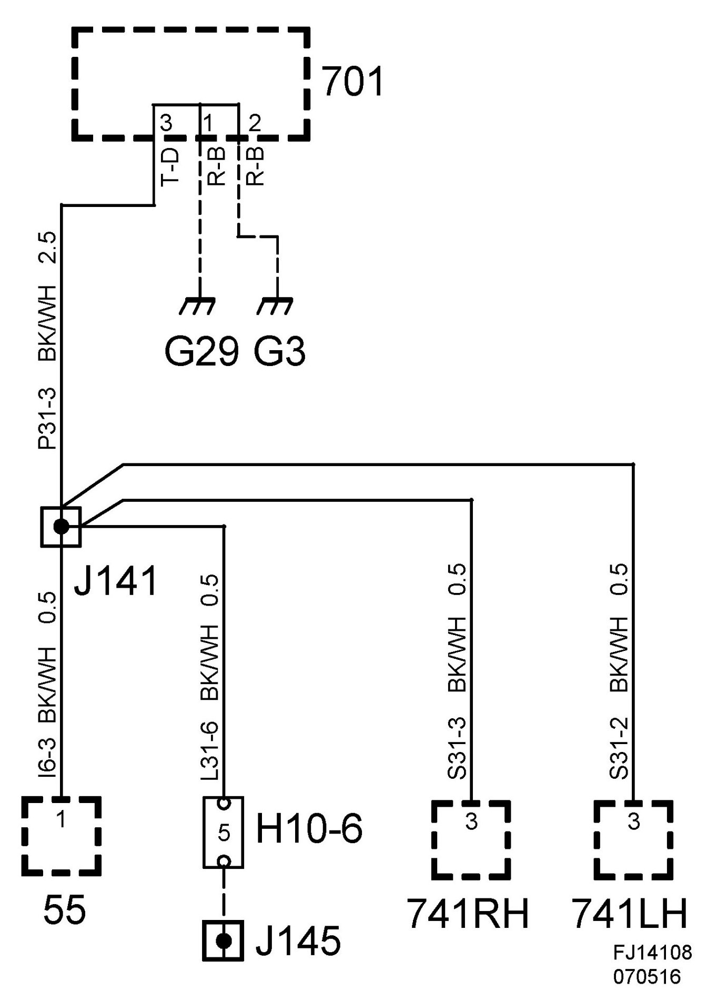
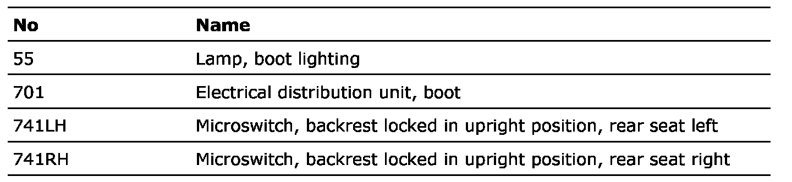

Crimp J141, Main Wiring Harness 4D
Crimp J141, Main Wiring Harness 4D
Location: Approx. 330 mm from branching point connector H10-6 towards the luggage compartment electrical centre

List of components

Crimp connection J145 Boot lid harness